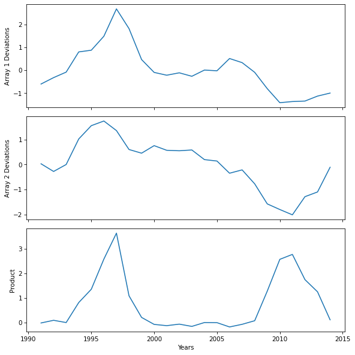

Think Linear Algebra is not for sale yet, but if you would like to support this project, you can buy me a coffee.
Correlation#
Click here to run this notebook on Colab.
Show code cell content
%load_ext nb_black
The nb_black extension is already loaded. To reload it, use:
%reload_ext nb_black
Show code cell content
from os.path import basename, exists
def download(url):
filename = basename(url)
if not exists(filename):
from urllib.request import urlretrieve
local, _ = urlretrieve(url, filename)
print("Downloaded " + local)
download("https://github.com/AllenDowney/ThinkLinearAlgebra/raw/main/utils.py")
Show code cell content
import numpy as np
import pandas as pd
import matplotlib.pyplot as plt
from utils import decorate
Section#
Spurious correlation from Tyler Vigen’s Spurious Correlations
Motor vehicle theft rate per 100,000 residents in New Mexico Source: FBI Criminal Justice Information Services
Total annual vehicle crash count in the US Source: Statista
array1 = np.array([346.3,377.9,405.1,504.8,513.2,582.2,717.2,619.9,467.1,403.6,389.8,401.6,384.5,415.2,411.7,472.2,451.9,404,323.5,254.1,259.8,262.2,286.7,301.6,])
array2 = np.array([6117,6000,6106,6496,6699,6770,6624,6335,6279,6394,6323,6316,6328,6181,6159,5973,6024,5811,5505,5419,5338,5615,5687,6064,])
array1_name = "Motor vehicle thefts in New Mexico"
array2_name = "Car crashes in the US"
years = np.arange(1991, 2015)
years
array([1991, 1992, 1993, 1994, 1995, 1996, 1997, 1998, 1999, 2000, 2001,
2002, 2003, 2004, 2005, 2006, 2007, 2008, 2009, 2010, 2011, 2012,
2013, 2014])
def standardize(seq):
array = np.asarray(seq)
return (array - array.mean()) / array.std()
array1_deviations = standardize(array1)
array2_deviations = standardize(array2)
product = array1_deviations * array2_deviations
np.mean(product)
np.float64(0.7864925239519239)
fig, [ax1, ax2, ax3] = plt.subplots(3, 1, sharex=True, figsize=(8, 8))
ax1.plot(years, array1_deviations)
ax1.set_ylabel("Array 1 Deviations")
ax2.plot(years, array2_deviations)
ax2.set_ylabel("Array 2 Deviations")
ax3.plot(years, product)
ax3.set_ylabel("Product")
ax3.set_xlabel("Years")
decorate()

np.mean(product)
np.float64(0.7864925239519239)
(array1_deviations @ array2_deviations) / len(years)
np.float64(0.7864925239519241)
Copyright 2025 Allen B. Downey
Code license: MIT License
Text license: Creative Commons Attribution-NonCommercial-ShareAlike 4.0 International